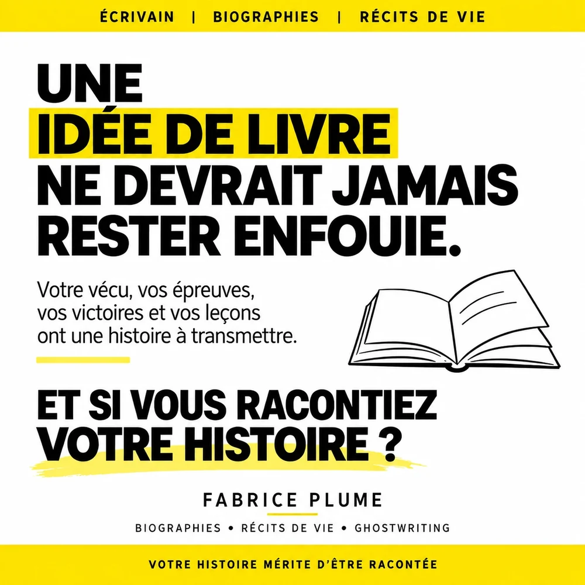

Une idée de livre ne devrait jamais rester enfouie

Vous y pensez depuis longtemps. Un jour, vous écrirez ce livre. Celui qui raconterait ce que vous avez traversé, ce que vous avez construit, ce que vous avez compris en chemin. Et puis les mois passent, et l’idée reste là, enfouie quelque part entre deux urgences.
Pourtant, une idée de livre ne devrait jamais rester dans un tiroir. Voici pourquoi, et comment la faire enfin sortir.
Pourquoi tant d’idées de livres restent enfouies
Les raisons sont presque toujours les mêmes. On manque de temps. On a peur de mal écrire. On se demande qui pourrait bien s’intéresser à notre histoire. Ou tout simplement, on ne sait pas par où commencer.
Aucune de ces raisons ne dit que l’histoire ne mérite pas d’être racontée. Elles disent seulement que le chemin semble long. Et un chemin, ça se raccourcit.
Votre vécu vaut plus que vous ne le pensez
Vos épreuves d’abord. Une maladie surmontée, un exil, un deuil, une faillite dont on s’est relevé. Ces passages difficiles sont souvent ce qui touche le plus les lecteurs, parce qu’ils y reconnaissent leurs propres combats.
Vos victoires ensuite. L’entreprise montée à partir de rien, la famille élevée contre vents et marées, le diplôme obtenu sur le tard. Elles montrent qu’on peut y arriver.
Et vos leçons, enfin. Ce que la vie vous a appris et que vous aimeriez transmettre à vos enfants, à vos petits-enfants, ou à des inconnus qui en ont besoin aujourd’hui.
Mis bout à bout, tout cela forme une histoire. La vôtre.
Ce qu’on perd quand on ne raconte pas
Une histoire qui n’est pas écrite finit par s’effacer. Les détails se brouillent, les dates se mélangent, les témoins disparaissent. Ce qui reste, ce sont quelques anecdotes répétées à table, de moins en moins précises.
Un livre, lui, garde tout. Il se transmet, se prête, se relit dans vingt ans. Il permet à ceux qui viennent après vous de comprendre d’où ils viennent.
Trois façons de faire sortir votre idée du tiroir
- Notez-la, telle qu’elle est. Quelques lignes suffisent : le sujet, la période, ce que vous voulez transmettre. Une idée écrite est déjà une idée qui existe.
- Parlez-en à voix haute. Racontez votre histoire à un proche. Vous verrez vite quels moments reviennent, lesquels vous émeuvent, lesquels font réagir.
- Faites-vous accompagner. Vous n’avez pas besoin de savoir écrire pour faire un livre. Vous racontez, j’écris avec vous, et le livre paraît sous votre nom.
Et si vous racontiez votre histoire ?
Le plus dur, c’est de commencer. Un appel de 30 minutes suffit pour poser votre idée sur la table, voir quelle forme elle pourrait prendre et décider de la suite. Gratuitement, et sans engagement.
Votre histoire mérite d’être racontée. Ne la laissez pas enfouie.